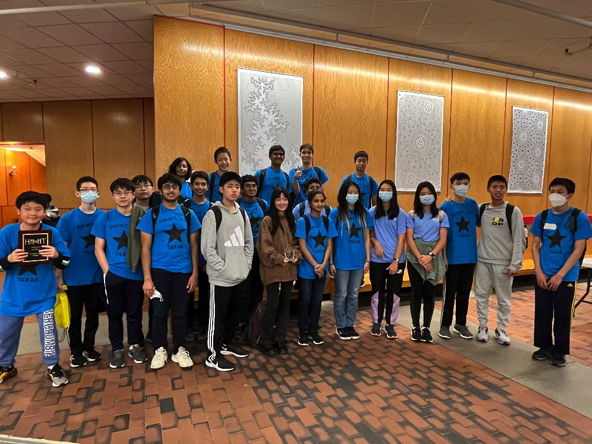

The Texas HMMT November 2022 Team
Texas Tornado
Alexander Jun
Justin Lai
Andrew Li
Tina Li (Captain)
Andrew Shen
Channing Yang
Texas Thunder
Joshua Kou
Justin Liu
Katherine Liu
Sriram Padmanabhan (Captain)
Rohan Pavuluri
Tarun Rapaka
Texas Typhoon
Arnan Bawa (Captain)
Jiya Dani
Saisneha Ghatti
Swayam Gupta
Ethan Yang
Texas Tsunami
Adriana Cheng
Evan Lai (Captain)
Nancy Lu
Ethan Poon
Coaches and organizers
Matthew Kroesche
Rich Wang
Individual results
Alexander Jun placed 10th individually, 24th in General Round, and 8th in Theme Round.
Tina Li placed 13th individually, 40th in General Round, and 7th in Theme Round.
Channing Yang placed 15th individually, 20th in General Round, and 20th in Theme Round.
Tarun Rapaka placed 47th individually and 20th in Theme Round.
Andrew Li placed 20th in General Round.
Andrew Shen placed 32nd in Theme Round.
Justin Lai placed 48th in Theme Round.
Team results
Texas Tornado placed 3rd in Sweepstakes, 11th in Team Round, and 1st in Guts Round.
Texas Thunder placed 24th in Sweepstakes and 13th in Guts Round.
Team photo

(Back to Main Page)